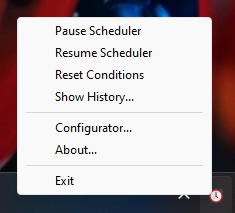

System Tray Resident Application
The system tray resident wrapper to whenever is launched via the start command or via the When Start desktop or menu icon: it launches the whenever scheduler executable in the background, also avoiding to show the console window on Windows desktops, and taking care to capture the scheduler output, interpret it to keep track of the tasks that have been executed along with their outcomes, and write the scheduler log to the application data directory. The resident wrapper also displays a clock icon in the tray area, meaning that the scheduler is active, which can be right-clicked (left-clicked on some Linux machines, see below) to allow a certain degree of interaction with the underlying scheduler itself. The icon may display a yellow dot in its lower-left corner, meaning that the scheduler is busy checking conditions or executing one or more tasks.

The available entries are:
Pause/Resume Scheduler: respectively pause scheduler checks or resume them; when the scheduler is paused no condition checks are performed and thus no tasks are launched. This does not affect however currently running tasks which keep running until their conclusion or until a timeout has been reached. When the scheduler is paused, the clock icon appears grayed out.
Reset Conditions: reset the status of all conditions, and in particular consider all non recurrent conditions that were verified during the session (and that, therefore, would not be checked anymore) as not verified, thus restarting checks.
Show History: display the History Box, a streamlined viewer that displays the tasks that have been executed along with their outcomes.
Configurator: display the configuration application.
About: display a simple information box.
Exit: stop the underlying scheduler and exit the resident application: this may require some time because When waits for all the tasks to finish before releasing the scheduler.[1]
When launching the resident wrapper, the following parameters can be specified on the command line:
-D/--dir-appdataPATH: specify the application data and configuration directory-W/--wheneverPATH: specify the path to the whenever executable (defaults to the one found in the PATH if any, otherwise exit with error)-L/--log-levelLEVEL: specify the log level, all whenever levels are supported (default: info, possible values are error, warn, info, debug, and trace)
However, it is recommended not to specify a custom APPDATA directory unless really needed, because by default both When and whenever_tray use this directory to locate the scheduler configuration file – that is, the one generated by When in configuration mode.
The suggested installation procedure and, in particular, adding icons for When with the --autostart option, can be used to set it up to automatically start at the beginning of the desktop session.